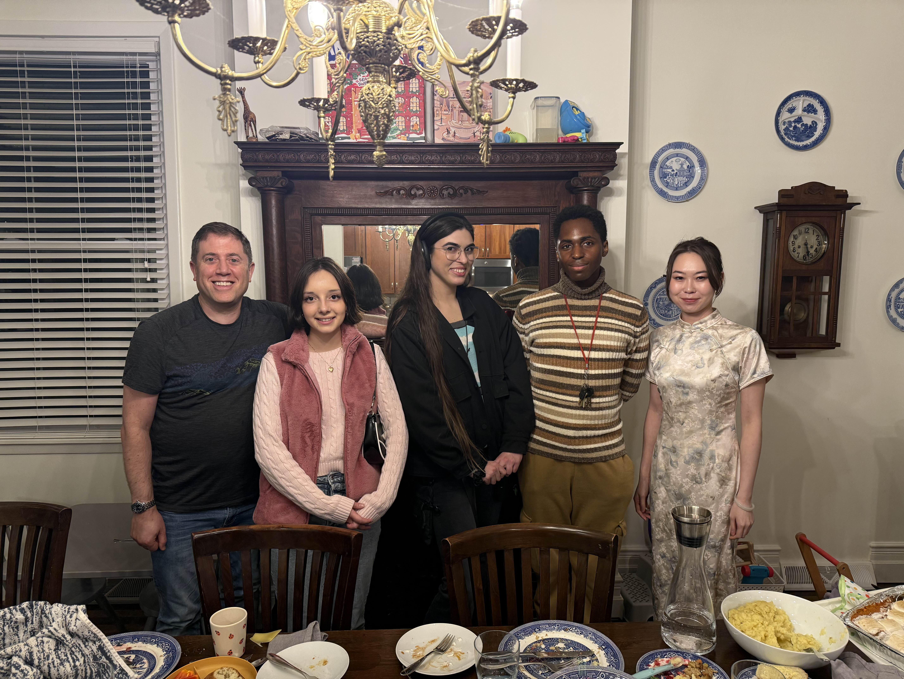

Veronica Pimenova
vpim [at] cmu [dot] edu


Hi, I'm Veronica! 🙂
I am an undergraduate senior at Carnegie Mellon University studying Information Systems & Human-Computer Interaction (HCI).
I do research within accessible software design & development at Carnegie Mellon's
Software and Societal Systems department,
advised by Andrew Begel and
Aaron Steinfeld.
My research focuses on the intersection of Artificial Intelligence (AI) and HCI, and I am passionate about inclusivity
for minority groups, especially for women and those with neurodiversities. I am in my third year of this research at the VariAbility Lab
, specifically within the usage of AI to develop tools to help neurodivergent individuals learn basic programming skills.
I just finished running a study where I'm testing the effectiveness of a segmentation algorithm I developed on users with ADHD to promote software engineering education for all.
I will be graduating from Carnegie Mellon with my Bachelor's degree in May 2025, and I am actively seeking potential advisor(s)
for PhD programs starting in Fall 2025.
Latest Research News
- December 1st, 2024 - Happy Thanksgiving from the VariAbility Lab!!
- October 20th, 2024 - I did a presentation at OurCS where I worked in collaboration with CMU's CyLab (Lorrie Cranor). Earlier in the week I also attended a fully-funded MIT Media Lab workshop at UIST 2024.
- September 28th, 2024 - I was a guest lecturer to 200+ attendees at Carnegie Mellon's family weekend.
- September 13th, 2024 - I was a guest lecturer at Carnegie Mellon's 67-200 course on my accessibility work.
- August 8th, 2024 - I was accepted to ACM SIGASSETS 2024 as an SV. 🎉
- July 25th, 2024 - I recieved a scholarship from Carnegie Mellon Information System's Inclusion Committee to attend the 2024 Tapia Conference in San Diego, CA.
- June 6th, 2024 - I recieved a scholarship from Cornell University and Meta Reality Labs to attend the XR Access Symposium on June 6-7 in New York City.
- May 8th, 2024 - I presented at Carnegie Mellon's 2024 Meeting of the Minds and recieved a fellowship from Carnegie Mellon Undergraduate Research to continue this work through fall 2024.

The dean of CMU School of Computer Science watched my presentation.


Read more about my academic and research journey here.